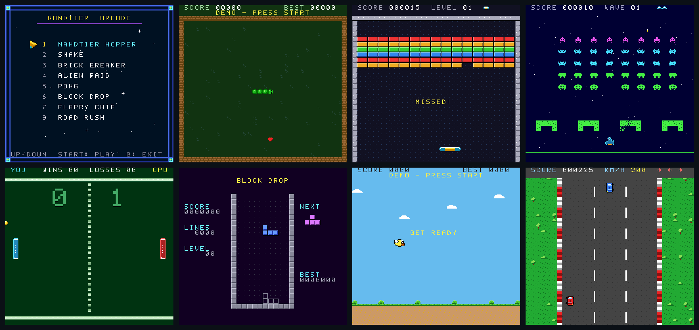

Games and the game SDK
NandTier ships with eight games, stored on the SD card as cartridges and started from a menu on the HDMI screen. Your PC keyboard is the controller. Writing your own game takes three files.

| # | Game | Goal |
|---|---|---|
| 1 | NandTier Hopper | platformer: run, jump and reach the flag, two levels |
| 2 | Snake | eat apples to grow; gold apples are worth more |
| 3 | Brick Breaker | clear five brick layouts; steel bricks take two hits |
| 4 | Alien Raid | shoot the descending formation; shields wear away |
| 5 | Pong | first to 7 against the computer |
| 6 | Block Drop | falling blocks with a ghost piece and levels |
| 7 | Flappy Chip | flap through the gaps between the pipes |
| 8 | Road Rush | weave through traffic on a scrolling highway |
Play
make && make program COMx=/dev/ttyUSB1 # launcher + all games, SD card in the board
python3 sw/gamepad.py /dev/ttyUSB1 # the keyboard becomes the controller
Arrows or WASD move, Space/K/X is A, J/Z/Shift is B, Enter is Start, Esc quits back to the menu. Every game plays a demo after 10 seconds on its title screen.
How cartridges work
The games are not in the firmware. When you pick one, the launcher reads the pack directory from the SD card, copies the game into the flash cartridge slot at 0x100000 (skipping the copy if the slot already holds it, by CRC-32), and jumps there. The game then runs from the flash with execute-in-place, like the launcher. Q returns to the menu. No hardware change was needed for any of this: it is all firmware.
Writing a game
A game is a folder in fw/games/ with three files. Copy snake/ to start:
Makefile: setsNAMEandSRCS, then includes../../sdk/cart.mk.art.py: palettes, 8x8 tiles and 16x16 sprites drawn with one character per pixel.<game>.c: definesgame_main()using thengamelibrary.
#include "ngame.h"
#include "art.h"
void game_main(void)
{
ng_begin(art_chr, ART_TILES, art_palette); // tiles and colours, screen on
ng_center(10, "HELLO", 1);
int x = 120;
while (!ng_quit()) { // Q or Esc returns to the menu
if (ng_buttons() & BTN_LEFT) x--;
if (ng_buttons() & BTN_RIGHT) x++;
ng_sprite(x, 100, S_HERO, 0, NG_BIG);
ng_frame(); // wait for the next frame
}
}
Add the folder to CARTS in fw/games/Makefile and run make program-games. A game can be up to 1 MiB and has the whole 8 KiB SRAM. On a PC, make -C test games builds every game against a software model of the PPU, plays it with scripted buttons and saves screenshots.